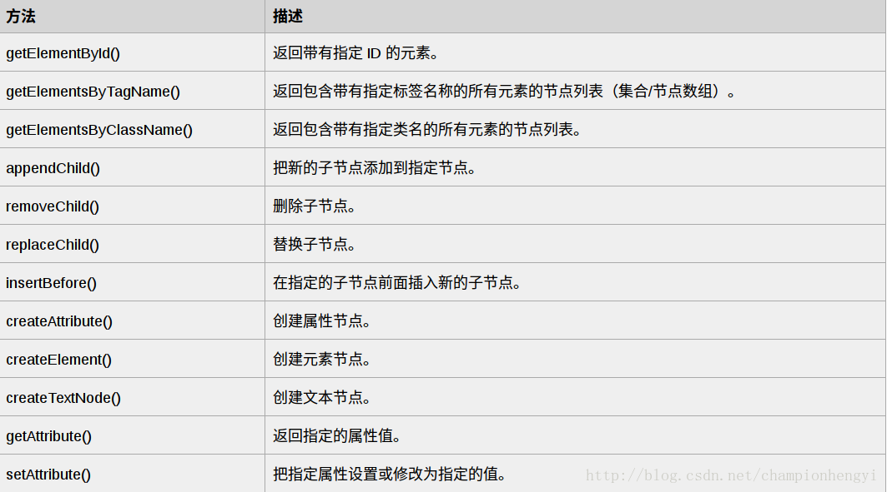
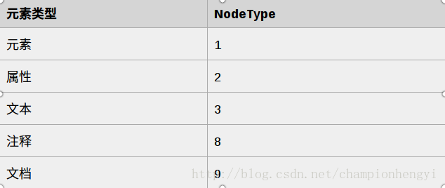

最近一直在学习Java方面的网络爬虫，然后要使用Jsoup解析html页面（htmlparse已经不建议使用了），但是对于Jsoup中的很多类和方法都很疑惑，查阅相关资料后发现使用Jsoup之前首先要了解一些HTML DOM方面的知识，就决定将网上的HTML DOM相关知识进行汇总，方便和我有相同兴趣爱好的伙伴学习。
不管是学习网络爬虫还是HTML DOM，都需要有一定的HTML基础，我推荐大家看看HTML教程，里面的内容很多，我只看了自己需要的部分，大家也可以根据自己的情况选择性的观看。
接下来我们进入正题！
DOM 简介
HTML DOM 定义了访问和操作 HTML 文档的标准方法。DOM 将 HTML 文档表达为树结构。如下图：

DOM 节点
根据 W3C 的 HTML DOM 标准，HTML 文档中的所有内容都是节点：
- 整个文档是一个文档节点
- 每个 HTML 元素是元素节点
- HTML 元素内的文本是文本节点
- 每个 HTML 属性是属性节点
- 注释是注释节点
在上面我已经给出了节点树结构。
节点父、子和同胞
节点树中的节点彼此拥有层级关系。父（parent）、子（child）和同胞（sibling）等术语用于描述这些关系。父节点拥有子节点。同级的子节点被称为同胞（兄弟或姐妹）。
在节点树中，顶端节点被称为根（root），每个节点都有父节点、除了根（它没有父节点），一个节点可拥有任意数量的子节点，同胞是拥有相同父节点的节点。
下面的图片展示了节点树的一部分，以及节点之间的关系：

DOM 访问
访问 HTML 元素（节点）
访问 HTML 元素等同于访问节点。
您能够以不同的方式访问 HTML 元素：
通过使用 getElementById() 方法
通过使用 getElementsByTagName() 方法
通过使用 getElementsByClassName() 方法
getElementById() 方法：getElementById() 方法返回带有指定 ID 的元素。下面的例子获取 id=”intro” 的元素：
1 | document.getElementById("intro"); |
getElementsByTagName() 方法：getElementsByTagName() 返回带有指定标签名的所有元素。下面的例子返回包含文档中所有 p 元素的列表：
1 | document.getElementsByTagName("p"); |
下面的例子返回包含文档中所有 p元素的列表，并且这些 p 元素应该是 id=”main” 的元素的后代（子、孙等等）：
1 | document.getElementById("main").getElementsByTagName("p"); |
getElementsByClassName() 方法：如果您希望查找带有相同类名的所有 HTML 元素，请使用这个方法。下面的例子返回包含 class=”intro” 的所有元素的一个列表：
1 | document.getElementsByClassName("intro"); |
DOM 方法
方法是我们可以在节点（HTML 元素）上执行的动作。
编程接口
可通过 JavaScript （以及其他编程语言）对 HTML DOM 进行访问。所有 HTML 元素被定义为对象，而编程接口则是对象方法和对象属性。方法是您能够执行的动作（比如添加或修改元素）。属性是您能够获取或设置的值（比如节点的名称或内容）。
HTML DOM 对象 - 方法和属性
一些常用的 HTML DOM 方法：
- getElementById(id) - 获取带有指定 id 的节点（元素）。
- appendChild(node) - 插入新的子节点（元素）。
- removeChild(node) - 删除子节点（元素）。
一些常用的 HTML DOM 属性：
- innerHTML - 节点（元素）的文本值。
- parentNode - 节点（元素）的父节点。
- childNodes - 节点（元素）的子节点。
- attributes - 节点（元素）的属性节点。
一些 DOM 对象方法
这里提供一些常用方法：

DOM 属性
获取元素内容的最简单方法是使用 innerHTML 属性。innerHTML 属性对于获取或替换 HTML 元素的内容很有用。
innerHTML 属性
下面的代码获取 id=”intro” 的 p 元素的 innerHTML：
1 | <html> |
在上面的例子中，getElementById 是一个方法，而 innerHTML 是属性。innerHTML 属性可用于获取或改变任意 HTML 元素，包括 html 和 body。
nodeName 属性
- nodeName 属性规定节点的名称。nodeName 是只读的。
- 元素节点的 nodeName 与标签名相同。
- 属性节点的 nodeName 与属性名相同。
- 文本节点的 nodeName 始终是 #text。
- 文档节点的 nodeName 始终是 #document。
nodeValue 属性
- nodeValue 属性规定节点的值。
- 元素节点的 nodeValue 是 undefined 或 null。
- 文本节点的 nodeValue 是文本本身。
- 属性节点的 nodeValue 是属性值。
获取元素的值
下面的例子会取回 p id=”intro” 标签的文本节点值：
1 | <html> |
nodeType 属性
nodeType 属性返回节点的类型。nodeType 是只读的。比较重要的节点类型有：

DOM 导航
通过 HTML DOM，您能够使用节点关系在节点树中导航。
HTML DOM 节点列表
getElementsByTagName() 方法返回节点列表。节点列表是一个节点数组。下面的代码选取文档中的所有 p 节点：
1 | var x = document.getElementsByTagName("p"); |
可以通过下标号访问这些节点。如需访问第二个 p节点，你可以这么写：
1 | y = x[1]; |
HTML DOM 节点列表长度
length 属性定义节点列表中节点的数量。你可以使用 length 属性来循环节点列表：
1 | x=document.getElementsByTagName("p"); |
导航节点关系
你能够使用三个节点属性：parentNode、firstChild 以及 lastChild ，在文档结构中进行导航。请看下面的 HTML 片段：
1 | <html> |
首个 p 元素是 body 元素的首个子元素（firstChild）；div 元素是 body 元素的最后一个子元素（lastChild）；body 元素是首个 > 元素和 div 元素的父节点（parentNode）。
firstChild 属性可用于访问元素的文本：
1 | <html> |
DOM 根节点
这里有两个特殊的属性，可以访问全部文档：
document.documentElement - 全部文档；document.body - 文档的主体。
1 | <html> |
childNodes 和 nodeValue
除了 innerHTML 属性，您也可以使用 childNodes 和 nodeValue 属性来获取元素的内容。下面的代码获取 id=”intro” 的 p 元素的值：
1 | <html> |
对于HTML DOM我就总结这么多，学习之后相信掌握Jsoup的基本方法应该是不在话下，HTML DOM还有很多知识，我只是给大家提取出来对于学习Java网络爬虫这方面需要掌握的基本知识与概念而已，如果大家想要深入学习，还是要在找找其他资料。